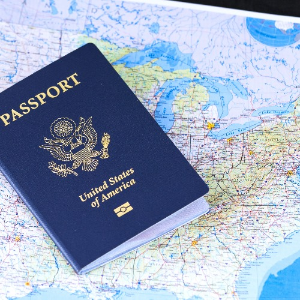
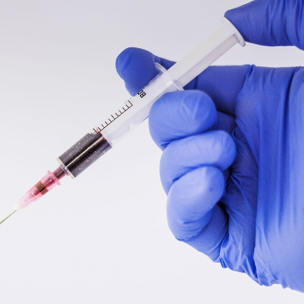
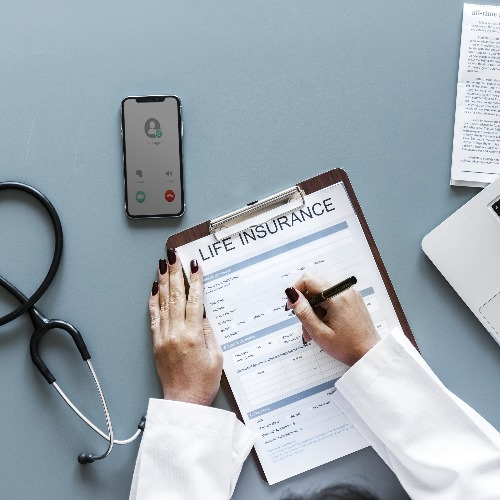
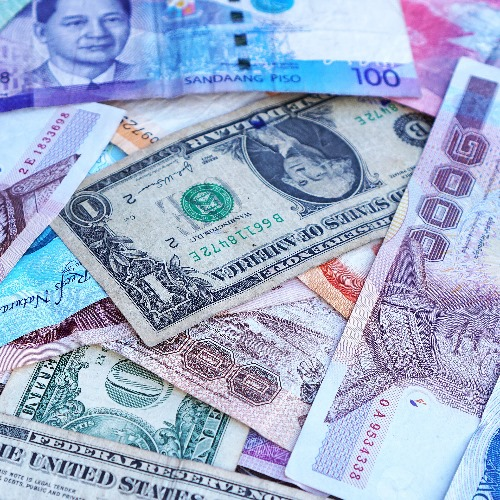
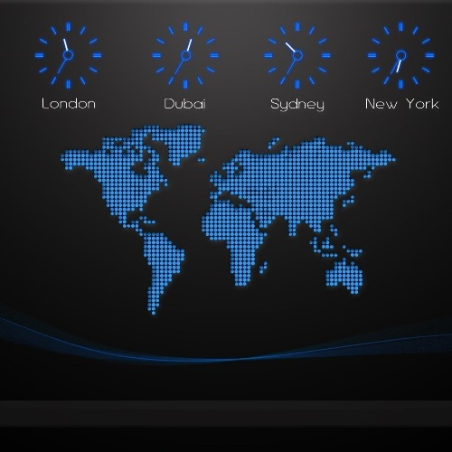
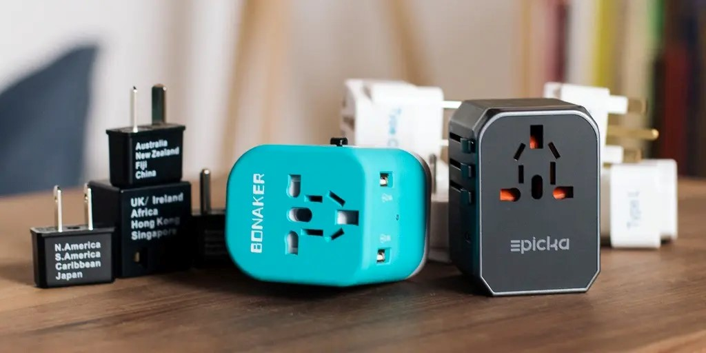

Essential Travel Information
Passports and Visas
Ensure your passport is valid for at least six months beyond your planned stay. Check visa requirements for India and apply for the appropriate visa in advance.
सुनिश्चित करें कि आपका पासपोर्ट आपके नियोजित प्रवास से कम से कम छह महीने के लिए वैध है। भारत के लिए वीज़ा आवश्यकताओं की जाँच करें और उचित वीज़ा के लिए पहले से आवेदन करें।
Vaccination and Health Precautions
It's recommended to consult a healthcare professional for necessary vaccinations before traveling to India. Additionally, take health precautions, including safe drinking water and carrying necessary medications.
भारत की यात्रा से पहले आवश्यक टीकाकरण के लिए स्वास्थ्य देखभाल पेशेवर से परामर्श करने की सिफारिश की जाती है। इसके अतिरिक्त, सुरक्षित पेयजल और आवश्यक दवाएं ले जाने सहित स्वास्थ्य संबंधी सावधानियां बरतें।
Travel Insurance
Consider purchasing travel insurance to cover unforeseen circumstances such as trip cancellations, medical emergencies, and lost belongings during your stay in India.
भारत में अपने प्रवास के दौरान यात्रा रद्द होने, चिकित्सा आपात स्थिति और सामान खोने जैसी अप्रत्याशित परिस्थितियों को कवर करने के लिए यात्रा बीमा खरीदने पर विचार करें।
Currency Exchange
Familiarize yourself with the local currency (Indian Rupee - INR) and exchange money at authorized currency exchange centers or banks for the best rates.
स्थानीय मुद्रा (भारतीय रुपया - INR) से खुद को परिचित करें और सर्वोत्तम दरों के लिए अधिकृत मुद्रा विनिमय केंद्रों या बैंकों में पैसे का आदान-प्रदान करें।
Time Zone
India operates on Indian Standard Time (IST), which is UTC+5:30. Adjust your schedules and plans accordingly.
भारत भारतीय मानक समय (IST) पर काम करता है, जो UTC+5:30 है। अपने शेड्यूल और योजनाओं को तदनुसार समायोजित करें।
Electrical Adapters
India typically uses Type C, D, and M sockets. Ensure you have the appropriate electrical adapters to charge your devices.
भारत आमतौर पर टाइप सी, डी और एम सॉकेट का उपयोग करता है। सुनिश्चित करें कि आपके पास अपने उपकरणों को चार्ज करने के लिए उपयुक्त विद्युत एडाप्टर हैं।
